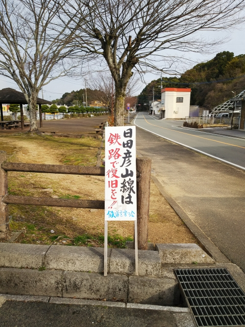
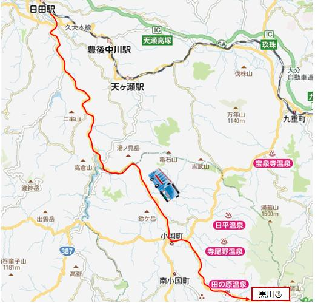
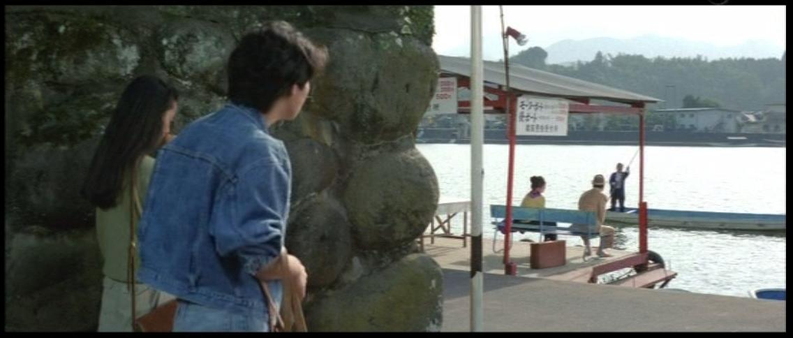

2021（R3）2月27日～3月1日 松山出張 まよい旅⑤
久々の松山出張、今回はフェリーで行くことに・・・

今回はコスモスクエア経由で南港のフェリーターミ
ナルに向かいます。
お～見えてきた。フェリーが泊まっとる。
ポートライナーもいつの間にか新しい車両になっと
るなぁ。
駅は疲れを感じさせるけど・・・

フェリーターミナルまで歩いてすぐですね。
これやこれや。乗り込もっと。
いよいよ出航です。
夕暮れの明石海峡大橋をくぐります。
東側はきれいな月が。
ひと晩寝たら、明日の朝は松山か・・・楽なもんやで
朝早いから、まだ暗いなぁ。って、えっ！松山港やく
なて、新門司港やがな！！
し、しもた、名門大洋フェリーに乗ってもうたんや！
とにかく、送迎バスで門司駅へ。
ようやく夜が明けてきたけど、ここどこや？
折尾？
より西に来てもうたがな・・・
折尾といえば、筑豊本線と鹿児島本線が立体交差して
た立派な駅やったのに、変に近代化されてもうた。
社会人になってからも、西鉄の北九州線が折尾まで走
ってたのに、結局乗れず終いやったのが残念やわ。
旧駅舎そっくりに作ったのか？移設したのか？
昔ながらの駅舎も見えますね。
古い地図には、西鉄路線が描かれてますね。
ここまで来てもうたなら、開き直ってちょっと寄り道
を・・・
まずは筑豊の直方へ。
実は折尾駅の改良？工事で筑豊本線も一部付け替えが
あったんやけど、今回乗ったから完乗状態継続です。
そして駅前には力士の銅像が！さて誰でしょう？
直方もキレイになってもうたか・・・
ここからは、第三セクターの平成ちくほう鉄道に。元は国鉄の伊田線です。
直方でも無人駅か。
往時は石炭輸送でにぎわった線だけに、第三セクタ
ーらしからぬしっかりした複線が続きます。
単行のキハが走行中すれ違うというのは、なかなか
新鮮でした。
金田に到着。ここから糸田線に乗換えてみます。
田川後藤寺駅が見えてきました。結構大きい駅です。
わかりにくいですが、３編成ほどＪＲ九州のキハ
４０型が停まってます。
田川後藤寺駅到着。ＪＲの日田彦山線と後藤寺線も
乗り入れる、交通の要衝っすね。
いい感じの駅です。
駅前。こんな田舎でも、今ふうのタクシーが停まっ
てます。
駅前をぶらつくと、駅前商店街発見。時間のせいか、それともずっとなのか、
店は全部閉まってますわ。
この「銀天街」ってネーミング、四国でもよう見るけど、関西では見かけん
よなぁ。
日田彦山線で南下します。
昔ながらのＢＯＸシート、いいですねぇ。
添田駅到着。なんと、鉄道はここまで！

２０１７年の豪雨災害で、ここから先は不通区間に。
そして、とうとう不通区間のＢＴＲ化が決定してい
ます。駅前も寂しい感じです。
今は日田まで代行バスが走ってます。

残念ですが、ＢＴＲ化は悪くないと思うで～。
代行バスから見た 彦山駅 筑前岩屋駅 （もう線路はがしてる？）
日田到着。ここもキレイになってる・・・。
駅前のバスターミナルも化粧直しされてる。
さあ、ここから温泉に向かうで～
３０分ほどバスにゆられて熊本県までやってきまし
た。
バイパス田の原に到着。
そして、やってきました田の原温泉！
いい感じですが、残念ながらこの共同浴場はすでに
閉鎖されてます。
シリーズ第２１作「男はつらいよ 寅次郎我が道を
行く（昭和５３年公開）」のロケ地ですね。
映画では寅さんが泊まった宿の温泉に入りました。
ここはええお湯です。
やりかったけど、一人では無理や～
このあと、地域の住民か、歯のないおっさんに話しかけられたん
やけど、さすが撮ってとは頼まれへんわ・・・。
１５分ほど歩いて、次の目的地の黒川温泉へ。
メジャーな温泉地だけに、人も賑わってました。
共同浴場の地蔵湯へ。
さすがに共同浴場はすいてて助かりました。
今ふうの店もたくさんあって、人気あるのもうなず
けます。
ただ個人的には、ちょっと今ふう過ぎるかな。
このあと、バスで日田に戻ります。
福岡行きのバスやけど、ほぼ満員で、乗られへんか
ったらどないしょとドキドキしたわ。
って、福岡は非常事態宣言中やないのか！家におれ
よ家に！

さて、日田ですが、こちらも柴又駅での別れのシー
ンが印象的なシリーズ第４３作「男はつらいよ 寅
次郎の休日（平成２年公開）」のロケ地です。
レンタサイクルを借りて巡ります。

屋形船が名物の河畔のロケ地です。
満男と泉ちゃんを探しに来た寅さんと出会った場所
ですね。

途中で見かけた川魚屋さん。美味しそうな鮎が泳いでますわ。
古い街並みの残る豆田町へ。
映画では、生活感の出た薬局でしたが、そこまで変
身させるとは、さすが映画スタッフっすね。
そろそろ松山に向かわんと。
日田駅からは久大本線に乗ります。
途中、福岡で夜を食べようと途中下車した時に知り
合ったおじさんと、名物の屋台へ行こうとしたので
すが全然やってなくて、名物鶏皮の有名な店がある
からと強引に誘われてわざわざ西鉄に乗って薬院ま
で行ったのに、サービスの悪いろくでもない店でし
た。
おしぼりは投げられるわ、注文したのにラストオー
ダ過ぎてから「ありません」言うてくるし、あげく
のはてに来てもない料理の金まで払わされかけたし
・・・
皆さん、ガイドブックに載ってる有名店には用心し
ましょう！
そのおじさんは、新しい地下鉄に乗っとき！ってう
るさく言うので、仕方なく乗りました。たしかにキ
レイな地下鉄でした。
夜も遅くなったので、福岡で泊まることに。
コロナ禍で客がいないから激安になってた新しいビ
ジネスホテルに泊まりましたが、こんなしゃれたド
ライヤーやポット、ビジネスホテルでは初めて見た
わ。
夜食は福岡の有名ラーメン店のカップ麺。
なんで福岡でこんなん食べなアカンねん！
律儀に要請なんて守らんと、夜も店開けろ
っちゅうねん！！
翌日、早朝から東に向かいます。
下関では、国鉄型車両が並んでました。
柳井港駅に到着。
ん～変わってない。
昭和の駅、やね。
駅前の港から、松山まで船に乗って向かいましたと
さ。